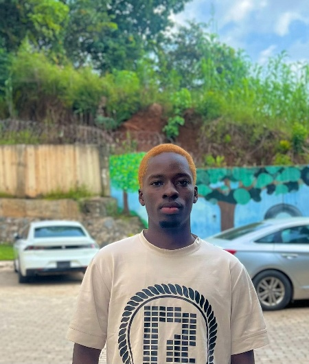

Babatunde Junior | WDD 130
Hello! My name is Babatunde Junior and I am from Osun state, Nigeria. I am a student of BYU. I am currently studying software development with focus on creating scaleable web applications. I also have a strong background in Information Tech. I enjoy tech related discussions and aspire to make a difference in the tech industry. I enjoy learning new things aswell. In my free time I play video games like Call Of Duty Mobile. My favourite book is eat that frog by Brian Tracy. Talks about 21 Great Ways to Stop Procrastinating and Get More Done in Less Time.